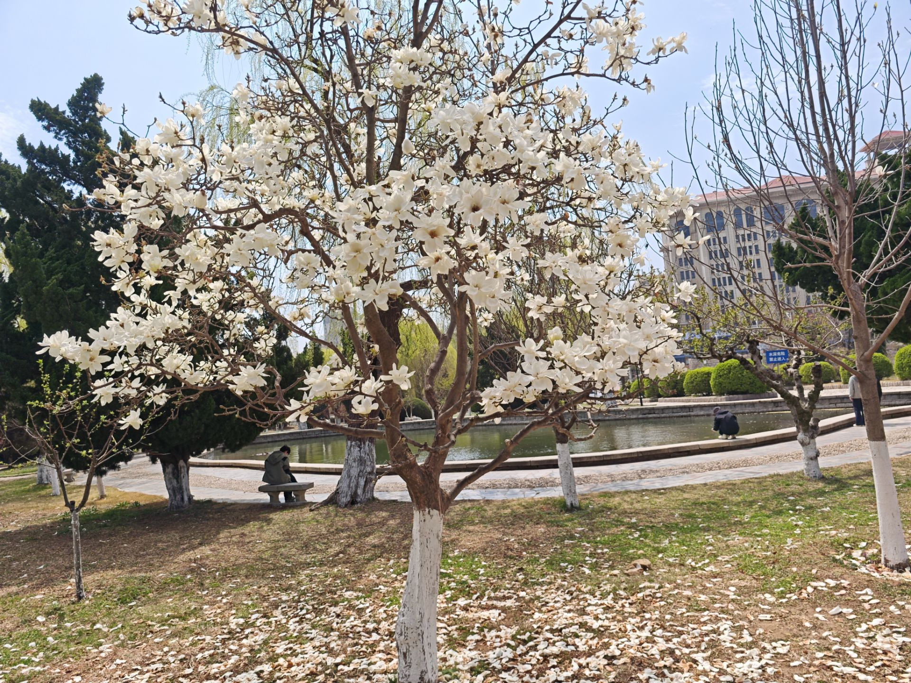
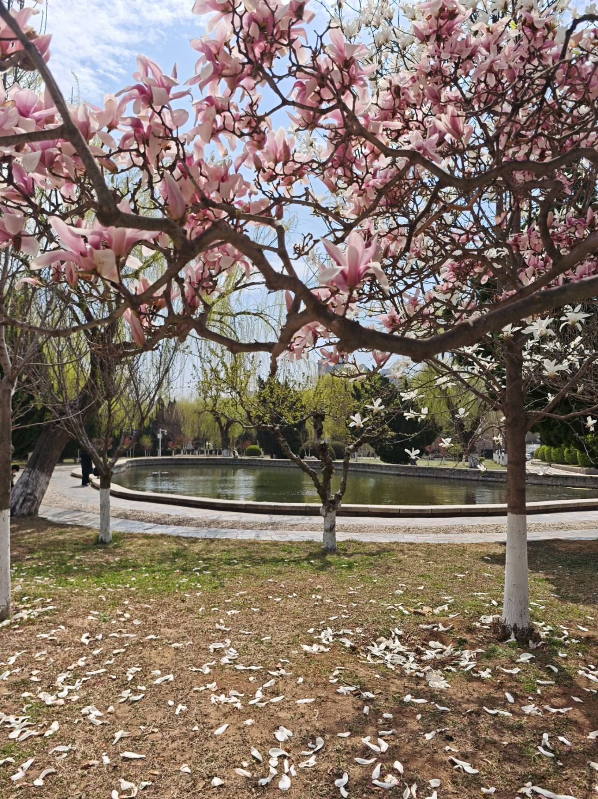
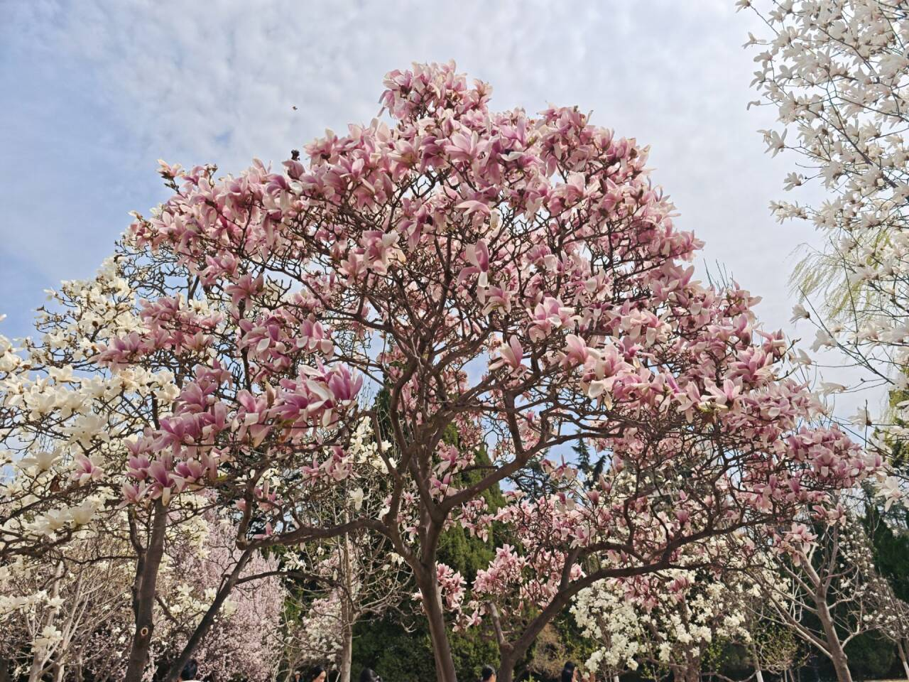

当春风拂过校园的围墙，整个世界都被染上了温柔的底色。清晨的第一缕阳光穿过图书馆前的香樟树，在地面投下细碎的光斑，风里带着玉兰花的甜香，混着青草的清新，扑在脸上，是独属于春日校园的温柔。
沿着主干道往前走，道路两旁的樱花树已经开得热烈，粉白的花瓣在风里簌簌落下，铺成一条浪漫的花路。路过人工湖时，湖面泛着粼粼波光，柳树的枝条垂在水面，像姑娘们垂落的长发，偶尔有几只白鹭掠过水面，惊起一圈圈涟漪。湖边的长椅上，有同学捧着书轻声朗读，阳光落在书页上，连时间都慢了下来。
再往校园深处走，是大片的草坪和花圃，郁金香、风信子、二月兰次第开放，红的、黄的、紫的，把校园装点成了彩色的花园。课间的时候，同学们三三两两坐在草坪上，聊天、晒太阳、拍照片，青春的笑声和春日的生机撞个满怀。傍晚时分，夕阳把天空染成橘红色，教学楼的玻璃反射着暖光，整个校园都笼罩在温柔的暮色里，连风都变得柔软起来。这就是我们的校园，春日里的每一寸土地，都藏着最动人的风景。
校园里的人文景观，承载着学校的历史与精神，每一处都值得细细品味：


